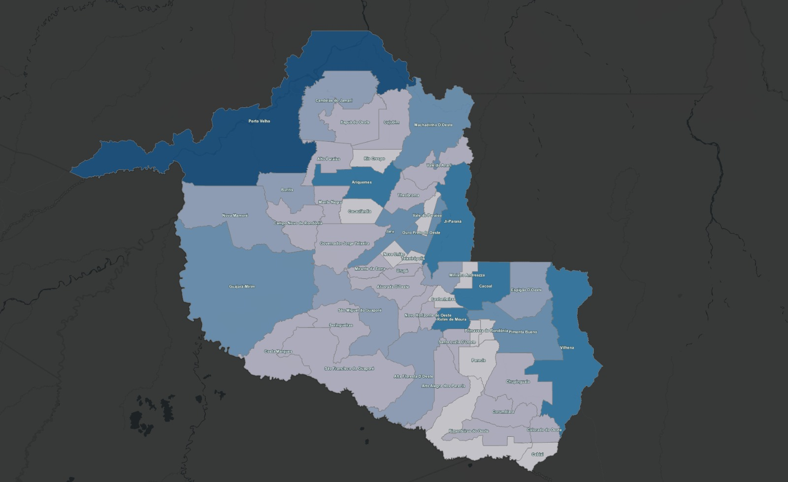

Há mais de uma década impulsionando o desenvolvimento econômico de Rondônia por meio da inovação, tecnologia e inteligência territorial.
A Secretaria de Estado do Desenvolvimento Econômico (SEDEC) promove políticas públicas voltadas ao crescimento econômico sustentável, atração de investimentos, inovação, comércio exterior e geointeligência.
Com uma equipe multidisciplinar, utiliza Business Intelligence, ArcGIS, análises territoriais e indicadores estratégicos para apoiar gestores públicos na tomada de decisões.
Promover o desenvolvimento econômico sustentável através da inovação e tecnologia.
Ser referência nacional em inteligência territorial.

Municípios atendidos
Dados públicos e gestão responsável.
Tecnologia para melhorar os serviços.
Parcerias para desenvolver Rondônia.
Crescimento econômico com responsabilidade.